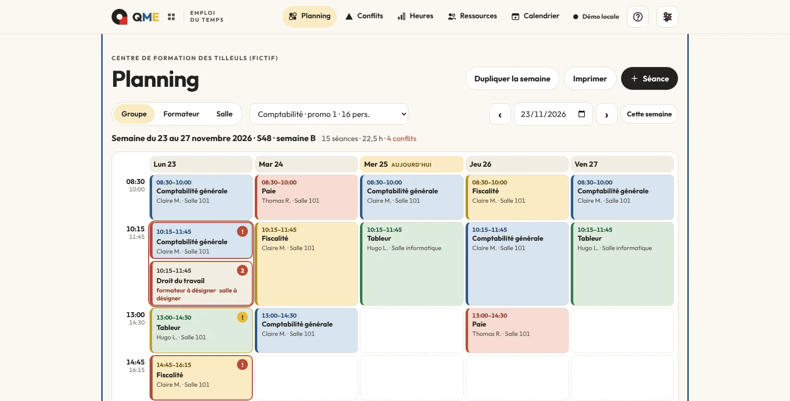
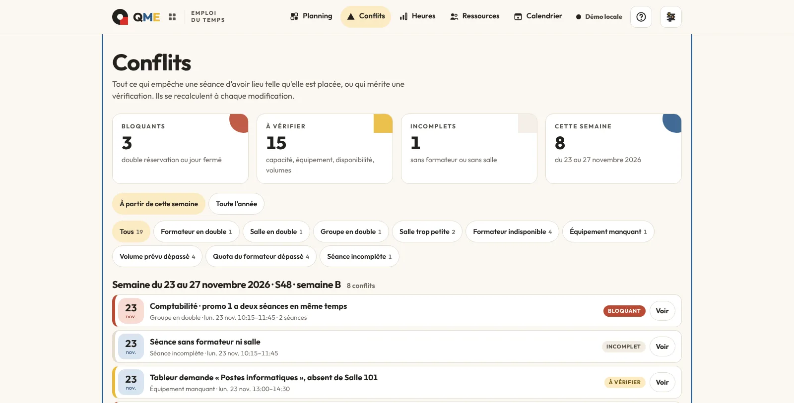
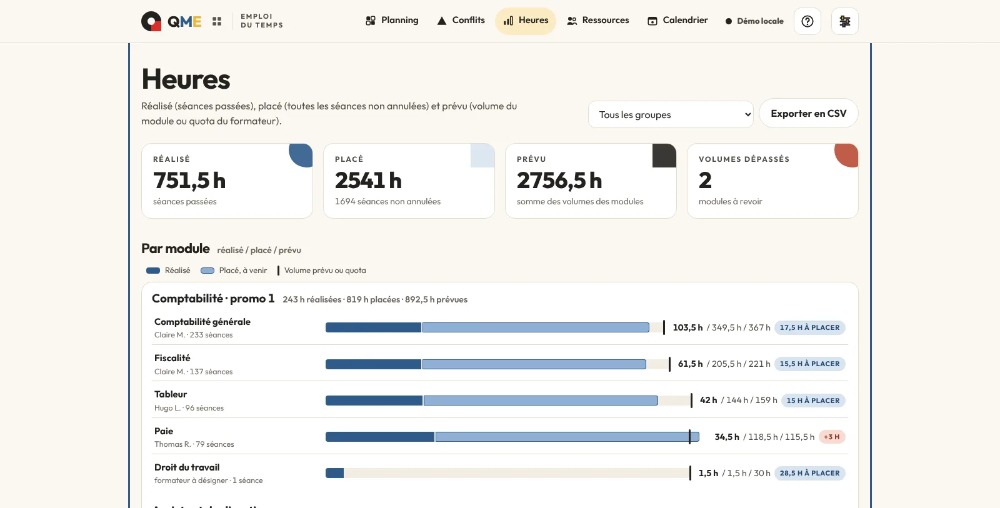
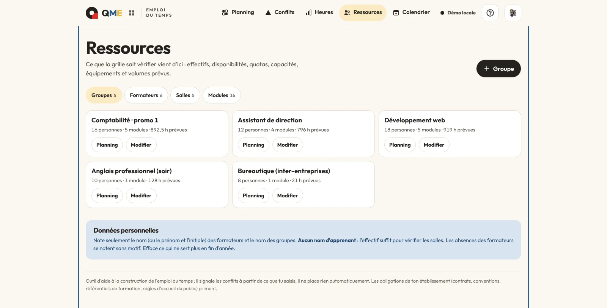

Concept pour les organismes de formation · emploi du temps prêt à l'emploi
Le conflit de salle, vu avant le premier cours.
Un outil en ligne déjà prêt pour les organismes de formation, les petits CFA et les écoles privées de langues ou d'arts : vous placez vos séances sur une grille semaine, et chaque conflit de formateur, de salle ou de groupe est signalé au moment où vous la posez. Les heures réalisées sont suivies par groupe, par module et par formateur. Il s'utilise tel quel dès le premier jour, et je peux l'adapter sur mesure à votre façon de travailler.
La démo ouvre l'année d'un organisme de formation fictif (cinq groupes, six formateurs, cinq salles), avec une semaine qui contient chaque sorte de conflit. Elle reste dans votre navigateur et n'envoie rien. Toutes les données affichées sur cette page sont fictives.
Le quotidien
Un onglet par groupe, un autre par salle, les heures des formateurs comptées à part, et une semaine à reprendre à chaque absence ou changement de salle.
Ce que cela coûte
Un formateur attendu dans deux salles à la même heure, un groupe de seize dans une salle de douze, un module qui dépasse son volume d'heures sans que personne ne le voie avant le bilan.
Ce que fait l'outil
Il croise groupes, formateurs, salles et modules à chaque séance posée, liste les conflits de l'année et compare les heures réalisées aux volumes prévus.
01 · Planning
Une grille qui signale les doublons à la saisie
Vue semaine par groupe, par formateur ou par salle ; vue jour sur téléphone.
- Formateur, salle ou groupe pris deux fois au même moment : signalé avant d'enregistrer
- Jours fériés et fermetures hachurés, semaines A et B
- Une semaine construite, recopiée jusqu'à la fin de l'année

02 · Conflits
Tous les conflits de l'année, triés par gravité
Bloquants, à vérifier, incomplets : chaque conflit renvoie à la bonne séance.
- Salle trop petite pour l'effectif du groupe
- Équipement demandé par le module absent de la salle
- Formateur indisponible ou absent ce jour-là

03 · Heures
Les heures réalisées, par groupe et par formateur
Pour chaque module : réalisé, placé et prévu ; pour chaque formateur : son quota.
- « 15 h à placer », « +3 h » ou « Complet » en un coup d'œil
- Volume d'un module ou quota d'un formateur dépassé : signalé séance par séance
- Bilan des heures exporté en CSV

04 · Ressources
Ce que la grille sait vérifier
Groupes et effectifs, formateurs et disponibilités, salles et équipements, modules et volumes prévus.
- Aucun nom d'apprenant : l'effectif suffit
- Disponibilités hebdomadaires et absences datées des formateurs
- Capacité et équipements de chaque salle

Prêt à l'emploi, ou sur mesure
L'outil est prêt : il s'ouvre en ligne, sur ordinateur, tablette ou téléphone, et vos données sont synchronisées. Si votre organisation demande autre chose, je le construis pour vous.
Le template prêt à l'emploi
45 €, utilisable tel quel dès le premier jour
- Planning, conflits, heures, ressources, calendrier
- Accès en ligne par clé, données synchronisées
- Démo complète et essai gratuit de 14 jours
La version sur mesure
Adaptée à votre établissement
- Plusieurs sites, demi-groupes, séances communes à plusieurs groupes
- Accès des formateurs à leur propre planning
- Émargement, vos exports, vos règles de planification
L'outil ne place rien automatiquement : vous posez chaque séance, il vérifie. Il ne demande aucun nom d'apprenant, et les absences des formateurs se notent sans motif. Les données de la démo sont fictives et ne quittent pas votre navigateur.
Trente minutes pour voir ce qui vous ferait gagner le plus de temps
Ouvrez la démo, puis dites-moi comment vous construisez votre emploi du temps aujourd'hui : je vous dis franchement si l'outil prêt à l'emploi suffit, ou ce qu'une version sur mesure changerait.